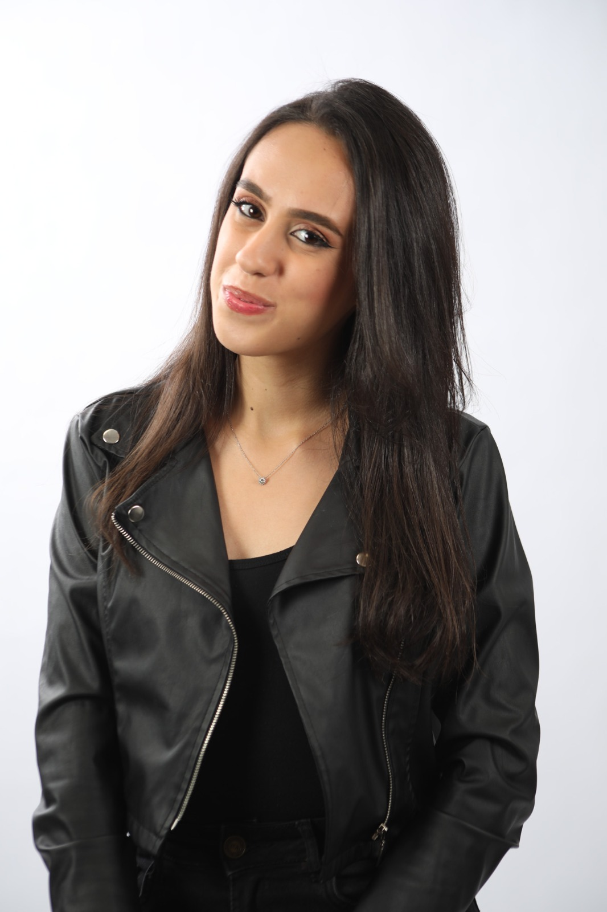

Jornalismo policial e segurança pública.
Estagiária na Thati TV | Record TV Campinas.
Apurando a verdade onde outros não chegam.

"Jornalismo é ir atrás do que importa — mesmo quando é difícil."
Sou jornalista com foco em jornalismo policial e segurança pública, atualmente em estágio na Thati TV, afiliada da Record TV em Campinas. Minha cobertura vai de ocorrências ao vivo até reportagens investigativas de fôlego.
Acredito que o jornalismo de qualidade começa na rua — ouvindo a comunidade, acompanhando as autoridades e traduzindo para o público o que realmente está acontecendo. Busco uma vaga em um veículo maior onde possa crescer como profissional e ampliar meu impacto.
"A reportagem que muda uma realidade começa com a pergunta que ninguém quer fazer."
— Letícia BorgesBusco uma vaga em redação ou emissora que valorize jornalismo de impacto. Entre em contato pelo LinkedIn ou e-mail.